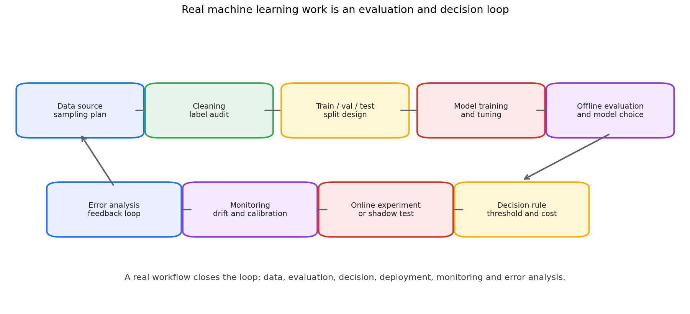
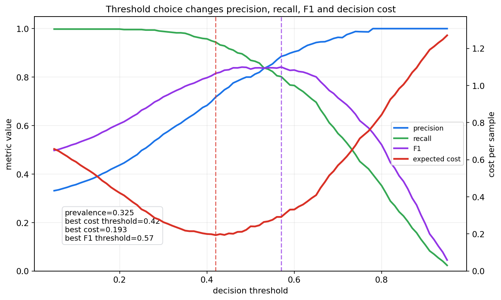
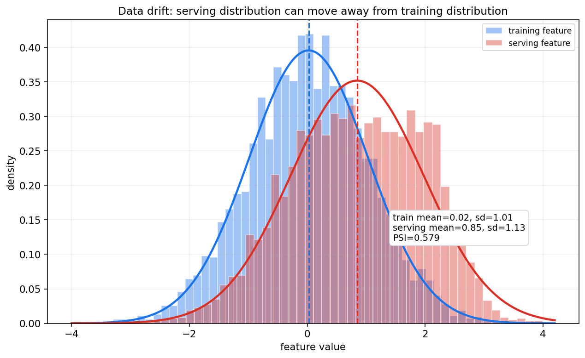
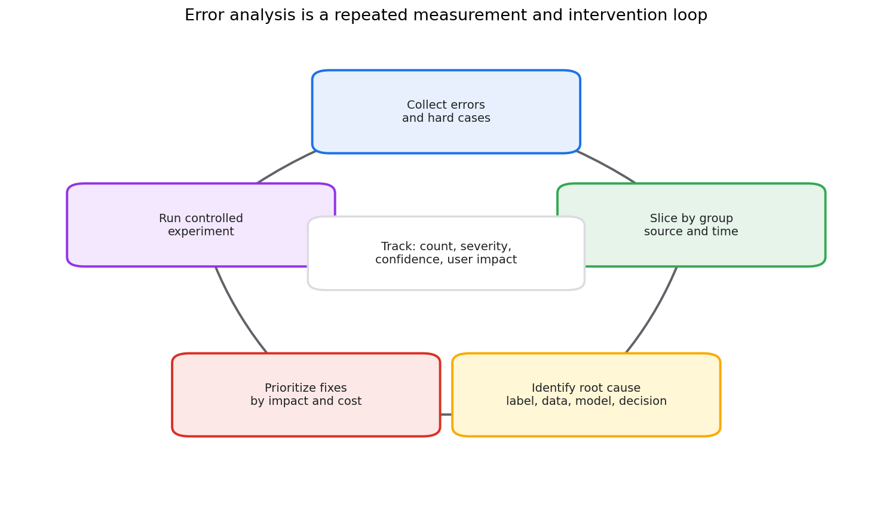

统计学习第十九章教程: 评估, 选择, 决策与真实数据工作流
前十八章已经建立了概率, 统计推断, 贝叶斯和统计学习的主线.
最后一章回到真实项目:1. 数据从哪里来, 样本是否代表目标总体?
2. 训练集, 验证集, 测试集应该怎样分?
3. 指标为什么不能脱离业务目标和错误代价?
4. 离线评估, 线上实验和模型监控怎样衔接?
5. 发现错误以后, 怎样系统分析和改进?本章的目标不是再介绍一个模型, 而是把全书收束为真实数据工作流.
0. 先看全章主线
flowchart LR
A["数据来源"] --> B["样本偏差<br/>标签噪声"]
B --> C["训练/验证/测试<br/>或交叉验证"]
C --> D["指标选择<br/>和置信区间"]
D --> E["模型比较<br/>和显著性"]
E --> F["阈值选择<br/>成本敏感决策"]
F --> G["上线实验<br/>和监控"]
G --> H["漂移检测<br/>错误分析"]
H --> A一句话概括:
真实数据工作不是训练一个模型就结束,
而是从数据采集, 评估设计, 模型选择, 决策规则到上线监控形成闭环.
1. 为什么最后要讲工作流
1.1 模型训练只是中间环节
很多初学者会把机器学习项目理解成:
拿数据 -> 训练模型 -> 看准确率 -> 结束.
真实项目通常更像:
明确目标 -> 收集数据 -> 检查偏差 -> 设计切分 -> 训练多个候选模型 -> 选择指标 -> 评估不确定性 -> 设置决策阈值 -> 上线实验 -> 监控漂移 -> 分析错误 -> 回到数据和模型.

这一章把概率统计语言放到这个闭环里.
1.2 工作流里的核心统计问题
真实项目中最常见的问题不是公式不会推, 而是:
- 样本是否代表未来要服务的人群?
- 标签是否可靠?
- 验证集是否被反复调参污染?
- 测试集是否真的只用了一次?
- 指标是否和真实代价一致?
- 模型提升是否超过随机波动?
- 离线收益是否能转化为线上收益?
- 上线后分布是否变化?
这些问题都可以回到本教程前面讲过的概念:
- 总体与样本
- 抽样偏差
- 估计量和抽样分布
- 置信区间
- 假设检验和功效
- 泛化误差
- 校准和不确定性
- 决策风险
2. 数据采集与样本偏差
2.1 先定义目标总体
做数据分析前要先问:
我真正关心的是哪个总体?
例如:
- 电商推荐: 明天会访问平台的用户
- 医疗诊断: 目标医院未来接诊的患者
- 风控模型: 未来申请贷款的人群
- 工业质检: 下一批生产线上的产品
如果训练数据来自另一个群体, 模型离线表现可能很好, 上线表现却很差.
2.2 样本偏差
样本偏差指样本分布和目标总体分布系统性不同.
常见来源包括:
- 只采集活跃用户, 忽略沉默用户
- 只保留有标签样本, 忽略未标注样本
- 数据来自历史策略, 未来策略已经改变
- 某些群体更容易被观测到
- 缺失值不是随机缺失
第七章讲样本时强调过:
样本不是天然代表总体, 代表性来自采样机制.
2.3 标签噪声
标签也可能是随机变量.
如果同一个样本交给不同标注者, 标签可能不同.
标签噪声来源包括:
- 标注标准不清
- 类别边界模糊
- 标注者水平不同
- 真实状态随时间变化
- 业务系统记录有延迟或错误
因此要记录:
- 标签来源
- 标注时间
- 标注者或规则版本
- 多标注者一致性
- 抽样复核结果
2.4 数据泄漏
数据泄漏是指训练过程使用了预测时不可获得的信息.
典型例子:
- 用未来信息构造当前特征
- 在全量数据上标准化后再划分训练和测试
- 同一个用户的高度相似样本同时出现在训练集和测试集
- 目标变量的后验结果被写进特征
- 根据测试集反复选择特征和模型
数据泄漏常常让离线指标虚高, 但上线后迅速失效.
3. 训练集, 验证集, 测试集再回顾
3.1 三者角色
训练集用于拟合参数:
验证集用于选择模型和超参数:
测试集用于估计最终泛化性能:
三者不能混用.
3.2 验证集也会过拟合
如果反复在验证集上试模型, 选择验证指标最高的版本, 那么验证集也被间接训练了.
这会产生选择偏差:
候选模型越多, 这个偏差越明显.
实践上可以:
- 保留最终测试集, 只在最后使用
- 限制实验次数
- 记录所有实验, 不只记录最好结果
- 用嵌套交叉验证估计选择过程的误差
3.3 时间序列要按时间切分
如果任务有时间顺序, 随机切分可能导致未来信息泄漏到训练集.
例如:
- 金融风控
- 用户留存预测
- 库存预测
- 设备故障预测
这类任务通常要使用时间切分:
并且要模拟真实上线时能看到的特征.
3.4 分组切分
如果同一个用户, 病人, 商品或设备有多条样本, 切分时要按组划分.
否则同一主体的近似重复信息可能同时出现在训练集和测试集, 导致指标虚高.
4. Cross Validation
4.1 K 折交叉验证
K 折交叉验证把数据分成 $K$ 份.
每次用 $K-1$ 份训练, 1 份验证, 最后取平均:
它的优点是更充分利用有限数据.
缺点是训练成本更高, 且仍然依赖切分方式是否合理.
4.2 什么时候适合交叉验证
适合:
- 数据量较小
- 样本近似独立同分布
- 训练成本可接受
- 需要稳定比较模型
不适合或要谨慎:
- 强时间依赖数据
- 同一主体有重复样本
- 数据分布随时间明显变化
- 训练一次成本很高的大模型
4.3 Stratified 和 Group CV
分类任务类别不平衡时, 常用 stratified CV 保持每折类别比例接近.
存在主体重复时, 要用 group CV, 保证同一主体不跨折.
时间序列任务则用 rolling 或 expanding window:
4.4 嵌套交叉验证
如果既要调参又要估计最终性能, 可以用 nested CV:
- 内层 CV 选择超参数
- 外层 CV 估计选择后的模型性能
它更严格, 但成本更高.
5. 评估指标选择
5.1 指标必须绑定任务目标
不同任务需要不同指标.
回归常见指标:
- MAE
- RMSE
- MAPE
- pinball loss
- negative log likelihood
分类常见指标:
- accuracy
- precision
- recall
- F1
- ROC-AUC
- PR-AUC
- log loss
- Brier score
- calibration error
排序和推荐常见指标:
- NDCG
- MAP
- MRR
- hit rate
- recall@K
生成模型常见评价:
- 似然或近似似然
- 样本质量
- 多样性
- 条件一致性
- 人工评估
没有一个指标适合所有任务.
5.2 Accuracy 的局限
如果正类只有 1%, 一个永远预测负类的模型准确率也有 99%.
这时更应该看:
- recall: 能找回多少正类
- precision: 报警中有多少是真的
- PR-AUC: 类别不平衡时比 ROC-AUC 更敏感
- 成本敏感指标: 误报和漏报代价不同
5.3 ROC-AUC 和 PR-AUC
ROC 曲线比较:
和:
PR 曲线比较 precision 和 recall.
当负类远多于正类时, ROC-AUC 可能看起来不错, 但 precision 仍然很低.
所以稀有事件检测常常更重视 PR-AUC.
5.4 指标的置信区间
测试集指标也是样本统计量.
如果测试集有限, 指标有抽样误差.
例如准确率:
可以近似给出标准误:
复杂指标可以用 bootstrap 估计置信区间.
6. 阈值选择与成本敏感决策
6.1 概率输出不是最终决策
分类模型常输出:
但实际业务需要动作:
- 是否拒绝贷款
- 是否报警
- 是否推荐
- 是否转人工复核
- 是否给优惠券
这需要决策阈值.
6.2 阈值影响指标

阈值升高通常会:
- precision 上升
- recall 下降
- false positive 减少
- false negative 增加
所以不能只问模型分数高不高, 还要问阈值怎么定.
6.3 成本敏感决策
假设:
- false positive 代价为 $C_{FP}$
- false negative 代价为 $C_{FN}$
对二分类概率 $\hat p=P(Y=1\mid x)$, 如果预测正类的期望代价低于预测负类, 就应该预测正类.
预测正类的错误代价:
预测负类的错误代价:
选择正类的条件为:
整理得到阈值:
如果漏报代价很高, 阈值应该降低.
如果误报代价很高, 阈值应该升高.
6.4 风险分级
很多场景不需要只有两个动作.
可以做风险分级:
- 低风险: 自动通过
- 中风险: 补充材料或延迟决策
- 高风险: 人工复核
- 极高风险: 自动拦截
这比单一阈值更贴近真实代价结构.
6.5 校准是决策前提
成本敏感阈值依赖 $\hat p$ 的概率意义.
如果模型不校准, 阈值公式就会失真.
因此决策前要检查:
- reliability diagram
- ECE
- Brier score
- 分组校准
- 不同时间窗口校准
7. 校准与风险分级
7.1 总体校准不够
一个模型总体校准, 不代表每个子群体都校准.
例如:
- 新用户和老用户
- 不同地区
- 不同年龄段
- 不同设备
- 不同数据来源
都可能有不同的校准误差.
7.2 分组评估
分组评估要看:
- 样本量
- 指标均值
- 指标置信区间
- 错误类型
- 校准曲线
- 阈值下的业务代价
不能只看总体平均, 因为总体平均可能掩盖某些群体上的严重失败.
7.3 拒识和人工复核
如果模型不确定, 可以选择不自动决策.
常见策略:
- confidence 低于阈值时拒识
- OOD 分数异常时拒识
- 高风险但证据不足时转人工
- 多模型分歧大时转人工
拒识不是失败, 而是风险控制的一部分.
8. 模型比较与统计显著性
8.1 指标差异可能来自随机波动
假设两个模型在测试集上的准确率分别是:
差异是 0.004.
这可能是真提升, 也可能是测试集随机波动.
因此比较模型时要估计不确定性.
8.2 配对比较
如果两个模型在同一批样本上评估, 错误不是独立的.
此时应使用配对比较思想.
常见方法:
- paired bootstrap
- McNemar test
- permutation test
- 对每个样本的 loss 差做置信区间
例如比较 log loss, 可以看:
再估计:
如果 $\bar d$ 的置信区间明显大于 0, 说明 B 的 loss 更低.
8.3 多重比较
如果试了很多模型, 总会有一个看起来最好.
这和第九章的多重检验问题类似.
候选越多, 偶然胜出的概率越大.
实践上要:
- 预先定义主要指标
- 记录所有候选模型
- 区分探索性实验和确认性实验
- 保留最终 holdout test
- 对关键结论做重复实验
8.4 效应量比 p 值更重要
统计显著不等于业务有意义.
一个巨大样本上, 0.01% 的指标提升也可能显著.
但如果收益小于上线成本, 风险和维护成本, 就不值得上线.
所以模型比较要同时看:
- 指标提升
- 置信区间
- 错误类型变化
- 计算成本
- 延迟
- 可解释性
- 稳定性
- 业务收益和风险
9. 线上实验与离线评估
9.1 离线最优不等于线上最优
离线评估通常使用历史数据.
线上系统会改变用户行为和数据分布.
例如推荐系统中, 新模型改变曝光内容, 用户点击分布也会随之改变.
这意味着未来数据不再只是历史数据的独立重复.
9.2 A/B 实验
线上实验通常把用户随机分到:
- control: 旧策略
- treatment: 新策略
然后比较核心指标.
随机化的作用是让两组在期望上可比, 降低混杂因素影响.
9.3 实验设计问题
设计线上实验时要考虑:
- 随机化单位是用户, 会话, 设备还是请求
- 是否存在干扰, 如一个用户影响另一个用户
- 实验周期是否覆盖星期和节假日
- 指标是否有延迟反馈
- 是否需要 guardrail metrics
- 是否有早停规则
- 样本量是否足够
9.4 Guardrail metrics
主指标提升不代表系统整体更好.
需要设置 guardrail metrics, 例如:
- 延迟不能显著增加
- 投诉率不能上升
- 转人工率不能异常
- 长期留存不能下降
- 风险事件不能增加
模型上线是决策问题, 不是单指标竞赛.
10. 数据漂移与概念漂移
10.1 数据漂移
数据漂移指输入分布变化:

漂移可能来自:
- 用户群体变化
- 采集设备变化
- 季节性变化
- 业务策略变化
- 上游系统改版
- 外部环境变化
10.2 概念漂移
概念漂移指条件关系变化:
例如:
- 欺诈者改变行为
- 用户兴趣变化
- 医疗诊疗标准更新
- 市场环境变化
概念漂移比单纯输入漂移更难发现, 因为它需要标签反馈.
10.3 监控什么
上线后至少监控:
- 输入特征分布
- 缺失率
- 类别比例
- 模型分数分布
- 预测类别比例
- 校准曲线
- 延迟标签上的真实指标
- 分组指标
- 业务 guardrail metrics
10.4 PSI 和分布距离
Population Stability Index 是常见漂移指标:
其中 $p_b$ 是训练分布在第 $b$ 个桶中的比例, $q_b$ 是线上分布比例.
PSI 只是告警信号, 不是因果解释.
漂移出现后还要追踪具体数据源, 特征处理和业务变化.
11. 因果意识初步
11.1 相关不等于因果
模型能预测 $Y$, 不代表改变特征 $X$ 会改变 $Y$.
例如:
雨伞出现和下雨高度相关, 但发雨伞不会导致下雨.
这类问题在业务解释中很常见.
11.2 混杂变量
如果变量 $Z$ 同时影响 $X$ 和 $Y$, 直接看 $X$ 与 $Y$ 的关系可能误导.
简单写作:
flowchart LR
Z["Z: confounder"] --> X["X: exposure"]
Z --> Y["Y: outcome"]
X --> Y如果不控制 $Z$, 可能把 $Z$ 的作用错归因给 $X$.
11.3 预测和干预不同
预测问题问:
因果问题问:
二者不是一回事.
本章只提醒因果意识.
系统因果推断需要专门学习随机实验, 倾向评分, 工具变量, 双重差分, 因果图等方法.
12. 可重复性与实验记录
12.1 记录什么
每次实验至少记录:
- 数据版本
- 样本筛选条件
- 特征版本
- 标签生成逻辑
- 代码 commit
- 配置文件
- 随机种子
- 训练环境
- 模型权重
- 评估脚本版本
- 主要指标和置信区间
- 已知失败案例
没有这些记录, 很难判断一次提升是真的模型改进, 还是数据或评估流程变化.
12.2 随机性来源
机器学习实验中的随机性包括:
- 数据切分
- 参数初始化
- mini-batch 顺序
- Dropout
- 数据增强
- 非确定性算子
- 分布式训练顺序
所以单次实验结果不应被过度解释.
关键结论最好重复多个 seed.
12.3 实验日志不是形式主义
实验记录的价值在于:
- 复现结果
- 发现回归
- 比较模型
- 审计上线决策
- 帮助错误分析
- 避免重复试错
真实团队中, 缺少实验记录会让模型演进不可追踪.
13. 真实项目中的错误分析流程
13.1 不要只看平均指标
平均指标告诉你模型总体表现, 但不告诉你为什么错.
错误分析要回答:
- 错在哪些样本?
- 错误是否集中在某些群体?
- 错误是标签问题, 数据问题, 模型问题, 还是决策阈值问题?
- 哪些错误代价最高?
- 修复哪个问题收益最大?

13.2 错误切片
可以按以下维度切片:
- 类别
- 分数区间
- 时间
- 地区
- 设备
- 数据来源
- 人群
- 特征缺失情况
- 业务场景
- 人工标注者
每个切片都要看样本量.
样本太少时, 指标波动很大, 不应过度解释.
13.3 错误归因
常见根因包括:
- 标签错
- 训练数据覆盖不足
- 特征缺失或延迟
- 数据预处理不一致
- 模型容量不足
- 模型过拟合
- 阈值不合适
- 分布漂移
- 业务规则和模型目标不一致
错误分析的目的不是责怪模型, 而是找到下一步最高收益的改进点.
13.4 修复要可验证
每个修复动作都应该对应可验证假设.
例如:
如果新增某类边界样本, 则该切片 recall 应该提升, 且总体 precision 不应明显下降.
然后用固定评估集或线上实验验证.
14. 实战清单
真实项目可以按下面清单推进:
- 写清目标总体和真实决策动作
- 确认样本来源和采样机制
- 审计标签质量和标签生成时间
- 检查数据泄漏, 尤其是时间泄漏和主体泄漏
- 按任务结构设计 train/val/test 或 CV
- 预先定义主指标和 guardrail metrics
- 对关键指标给出置信区间或 bootstrap 区间
- 用验证集选择模型, 用测试集做最终确认
- 做分组评估和校准评估
- 根据代价结构选择阈值或风险分级规则
- 比较模型时使用配对思想和效应量
- 上线前设计 A/B 实验或 shadow test
- 上线后监控输入漂移, 分数漂移, 校准和业务指标
- 定期做错误分析并形成数据和模型改进闭环
- 记录所有实验配置, 数据版本和结论
15. 典型易错点
15.1 只看单一指标
单一指标无法覆盖所有风险.
一个模型可能 F1 提升, 但高风险人群上的 recall 下降.
15.2 把离线最优误当成线上最优
离线数据是历史样本.
线上系统会影响未来样本, 用户行为和反馈机制.
15.3 忽略数据泄漏
数据泄漏会让模型看起来极强.
越是指标异常好, 越要检查泄漏.
15.4 忽略阈值和成本
AUC 高不代表当前阈值下业务收益高.
阈值选择要结合误报, 漏报, 人工成本和风险承受能力.
15.5 把相关结论当因果结论
预测模型可以发现相关模式, 但不自动支持干预结论.
如果要回答 "做 X 会不会导致 Y 变化", 需要因果设计.
15.6 不记录实验过程
没有数据版本和配置记录, 模型结果很难复现.
这会直接影响研究可信度和工程维护.
16. 本章小结
这一章把全书落到真实工作流:
- 数据采集决定样本能否代表目标总体
- 训练集, 验证集, 测试集承担不同角色
- 交叉验证可以缓解小样本评估不稳定, 但不能替代合理切分
- 指标必须绑定任务目标和代价结构
- 阈值选择是决策问题, 不是纯模型问题
- 模型比较要考虑随机波动, 多重比较和效应量
- 离线评估要和线上实验, guardrail metrics 衔接
- 数据漂移和概念漂移会让模型性能随时间变化
- 因果意识能避免把相关性误当成干预效果
- 可重复性和错误分析是长期改进的基础
到这里, 这套概率论, 数理统计, 贝叶斯统计和统计学习教程完成了第一轮主线:
从随机现象出发, 建立概率语言;
从有限样本出发, 建立统计推断;
从先验和数据出发, 建立贝叶斯更新;
从经验风险出发, 建立统计学习;
最后回到真实数据和决策闭环.
后续如果继续扩展, 可以在这个基础上补充时间序列, 因果推断, 高维统计, 强化学习, 图模型和更深入的生成模型专题.